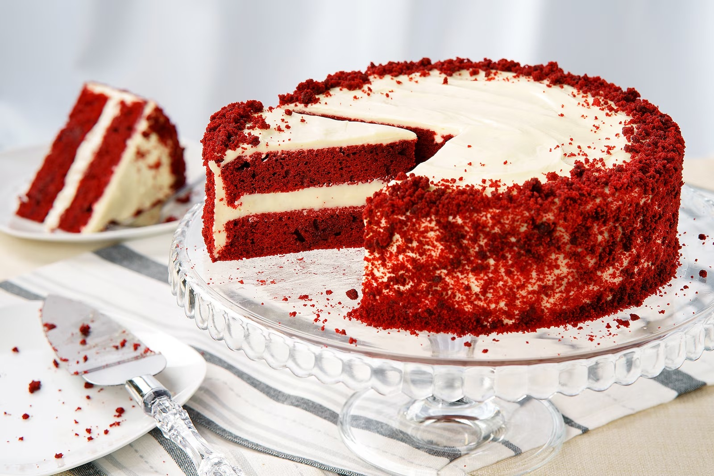

This American classic is traditionally made for Valentine’s Day and Christmas. Red velvet cake is typically covered in a French-style butter roux icing, though recently cream cheese frosting and buttercream have both been used as a simpler and tastier alternative.
Meal prep time : 2 hours
Servings : 6